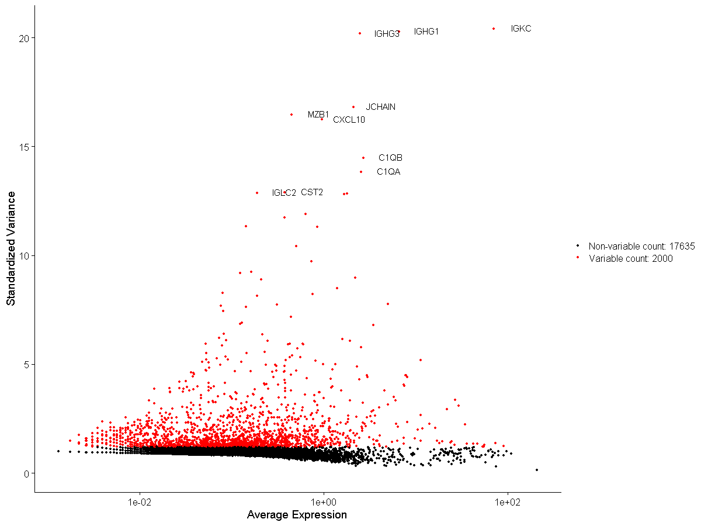
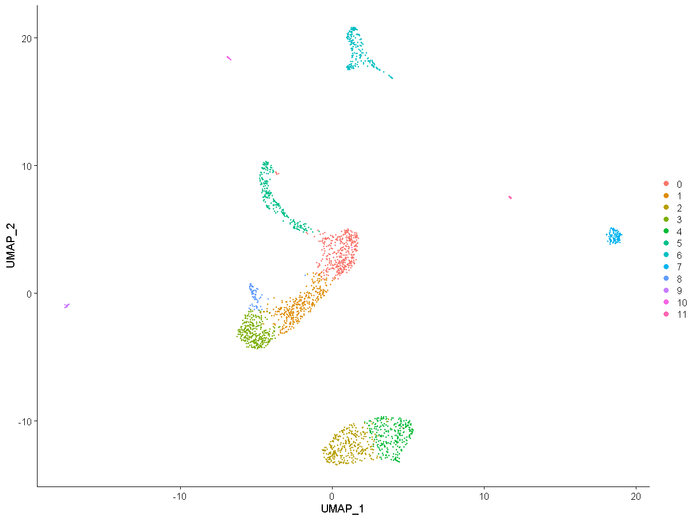
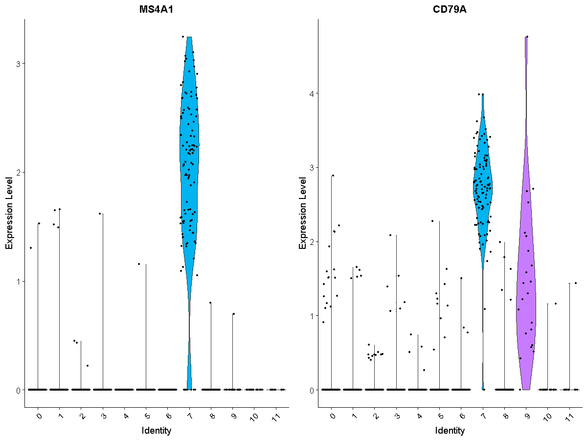
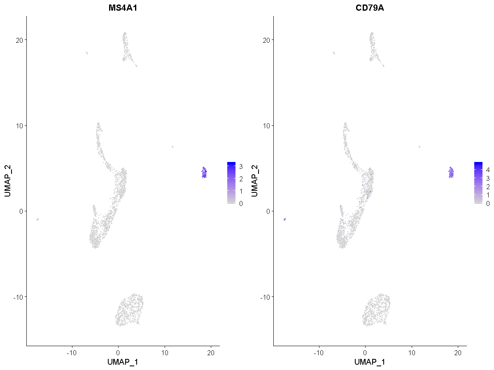
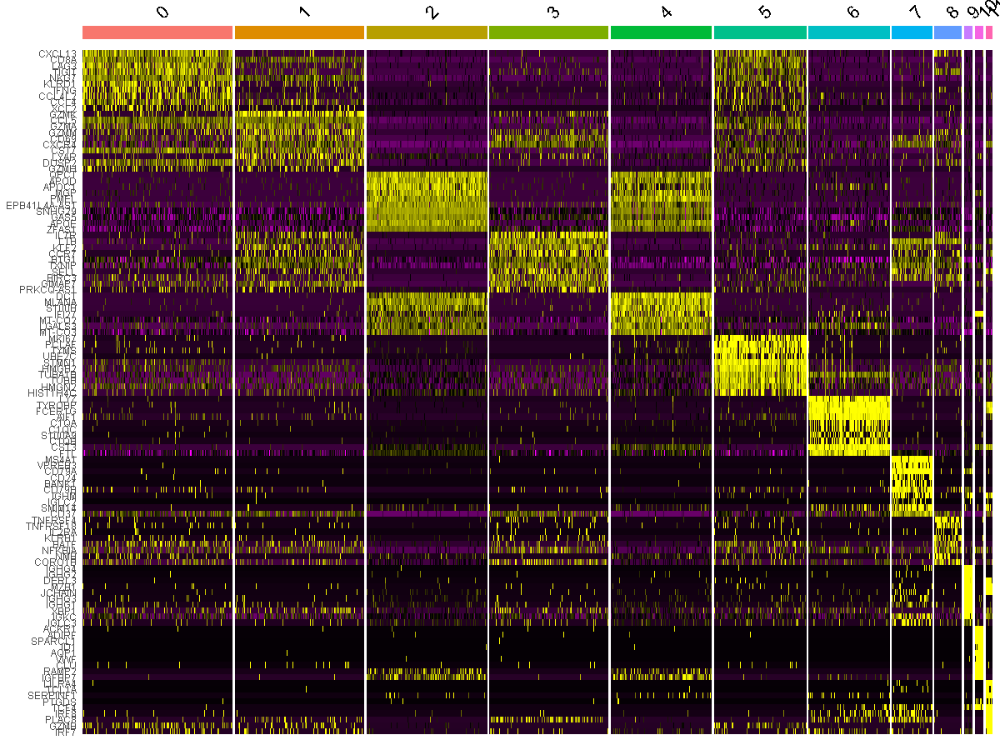

Chapter 5 scRNA-seq Downstream Analysis
5.1 Seurat Package
Seurat is an R package designed for QC, analysis, and exploration of single-cell RNA-seq data. Seurat aims to enable users to identify and interpret sources of heterogeneity from single-cell transcriptomic measurements, and to integrate diverse types of single-cell data.
The format of output results from both Cell Ranger and STARsolo stream nicely into the Seurat defualt analysis pipeline. We will not demonstrate this process but only highlight the types of insights/plots you can achieve from this data analysis. More information can be found at https://satijalab.org/seurat.
5.1.1 Differentially expressed Genes

5.1.2 Cell Clustering

5.1.3 Analysis of Variable Gene Markers


5.1.4 Heatmap of gene expression by clusters
